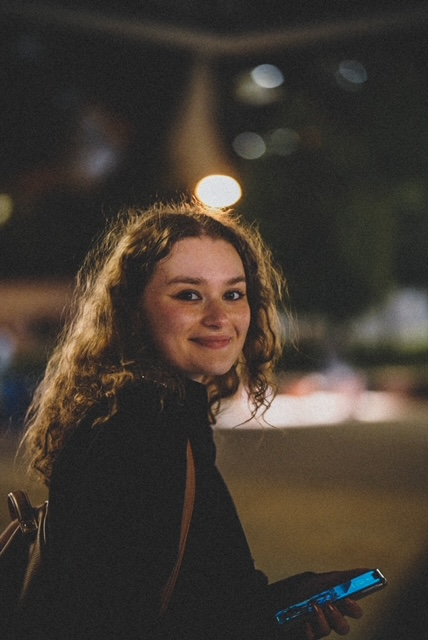

About Me
My name is Theodora Vatra and I'm originally from Montreal. My parents immigrated from Romania in order to provide a better life for themselves and the family in which they were planning on building. Due to my romanian background, as well as being born in Montreal and then coming to Ottawa, I know how to speak, read and write in three languages.
I'm currently learning how to work with html and this is my 1rst time working with any type of programming. Although this program requires a lot of hard work I truly believe that
Success is sweet, but the secret is sweat-General Nroman ShwarzkopfAs long as I put in the hard work and learn from my mistakes, I'll eventually be successful and come closer to reaching for my dreams and goals. 
In terms of hobbies, I've always had a passion for photography and drawing. Photography and drawing have helped me make new friends and connections as well as getting through harder times, they're both things I could never let go or get tired of.